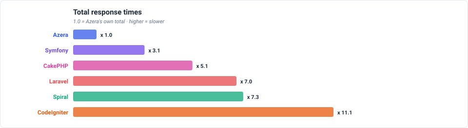
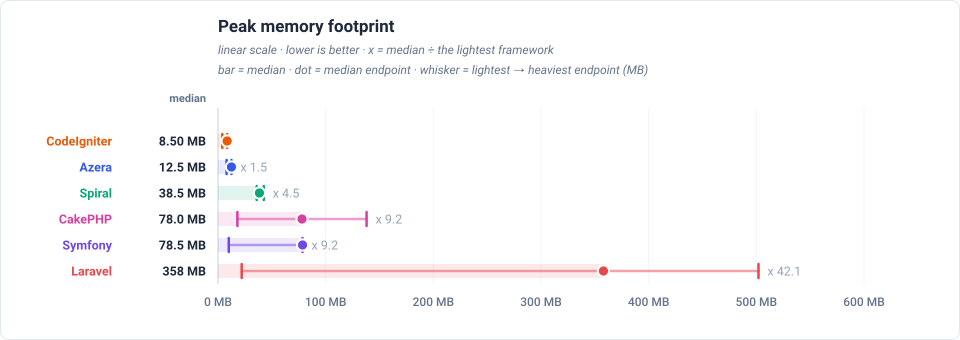
Feature benchmarks
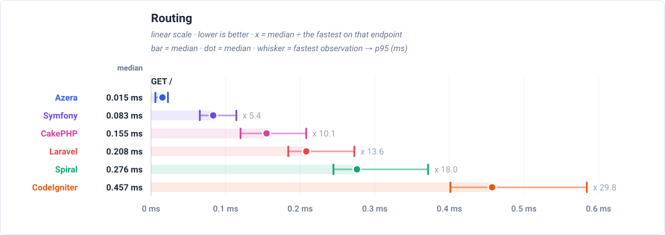
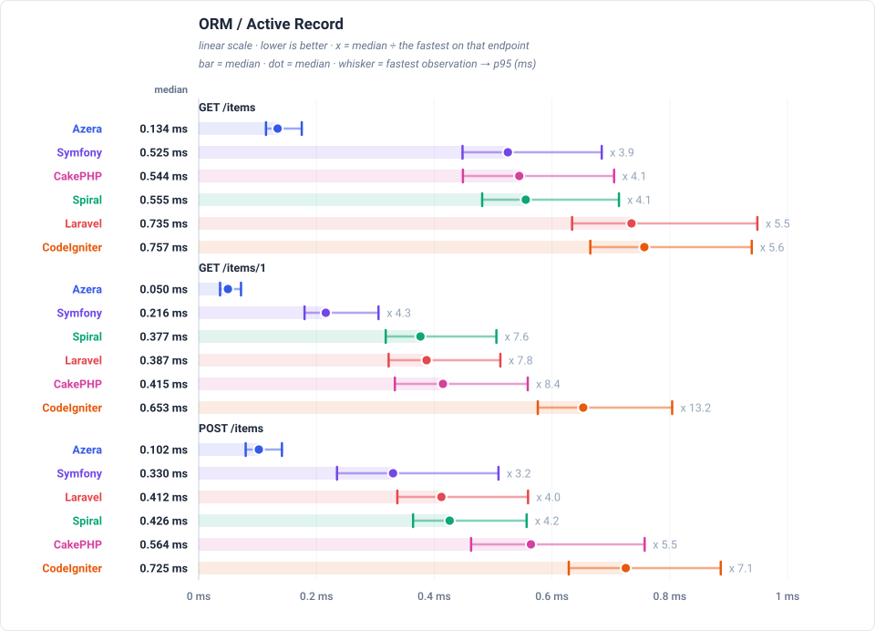
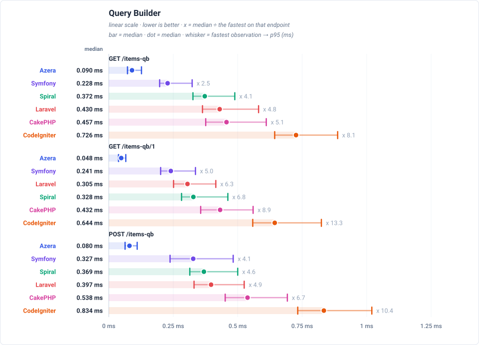
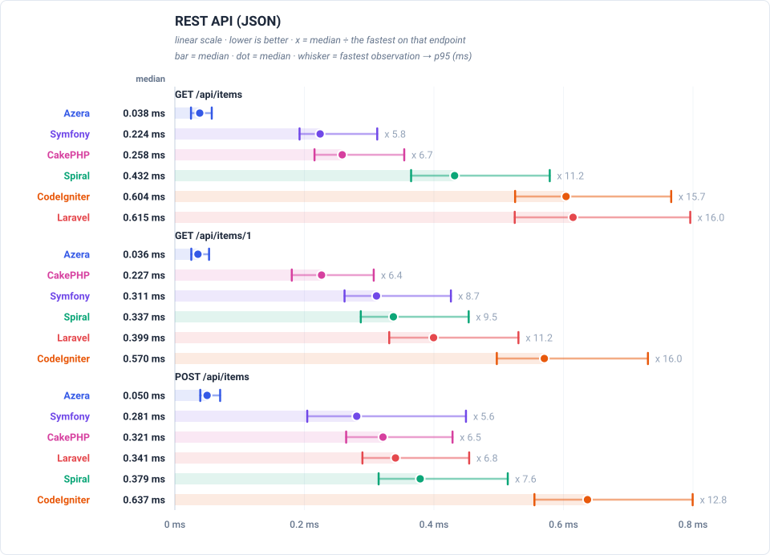
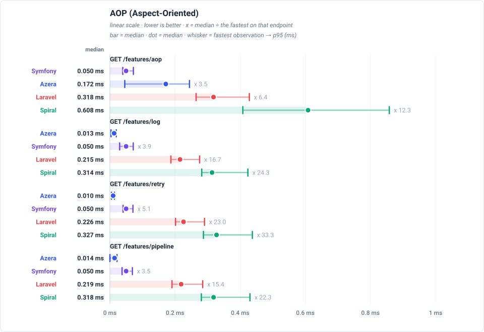
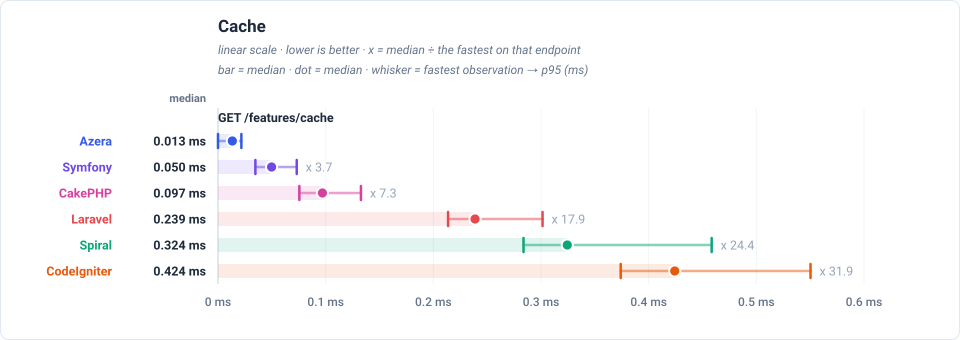
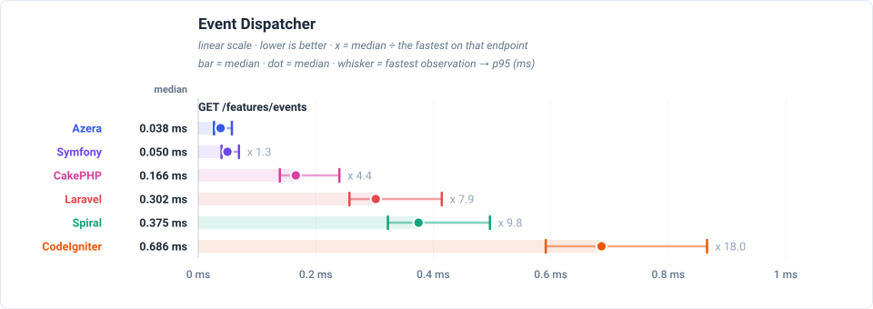
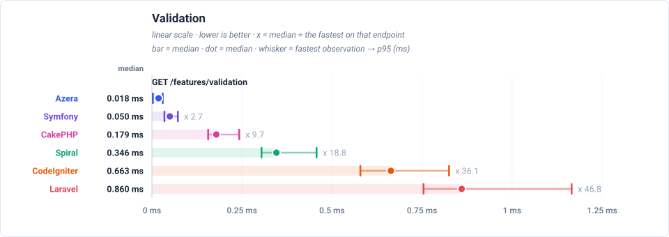
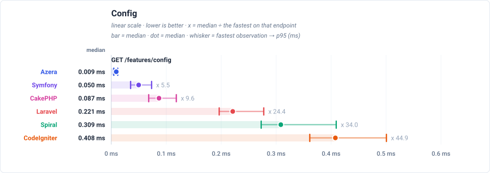
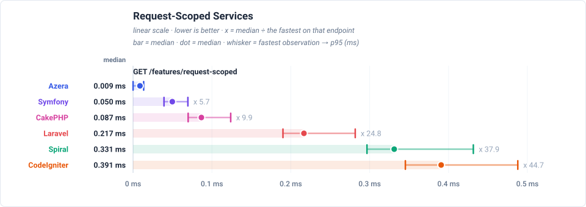
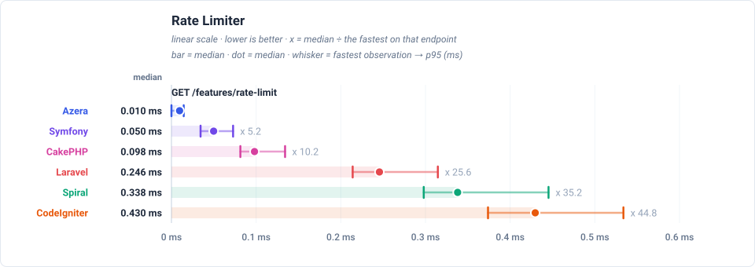
Wins per framework
| Framework | Wins | Share |
|---|---|---|
| Azera | 18 | 86% |
| Symfony | 3 | 14% |
| Laravel | 0 | 0% |
| Spiral | 0 | 0% |
| CodeIgniter | 0 | 0% |
| CakePHP | 0 | 0% |
Latency by endpoint (ms, trimmed mean — lower is better) (sub-line: handle + post-response cleanup, which sum to the total)
| Request | Workload | Azera | Laravel | Symfony | Spiral | CodeIgniter | CakePHP |
|---|---|---|---|---|---|---|---|
GET / | no DB — routing + template only | 0.016 0.015+0.001 | 0.218 0.217+0.000 | 0.089 0.087+0.002 | 0.291 0.281+0.010 | 0.474 0.464+0.009 | 0.166 0.165+0.000 |
GET /items | 20 of 1000 items (page 1, + COUNT) | 0.141 0.138+0.003 | 0.760 0.760+0.000 | 0.545 0.542+0.003 | 0.577 0.560+0.017 | 0.780 0.767+0.013 | 0.582 0.581+0.000 |
GET /items/1 | 1 item by id | 0.054 0.052+0.002 | 0.403 0.402+0.000 | 0.230 0.228+0.002 | 0.394 0.381+0.013 | 0.672 0.660+0.012 | 0.439 0.439+0.000 |
POST /items | 1 row upserted (sentinel #999999) | 0.109 0.107+0.002 | 0.430 0.429+0.000 | 0.359 0.356+0.003 | 0.445 0.431+0.013 | 0.749 0.736+0.013 | 0.598 0.597+0.000 |
GET /items-qb | 20 of 1000 items (page 1, + COUNT) | 0.096 0.095+0.001 | 0.449 0.448+0.000 | 0.241 0.239+0.002 | 0.391 0.379+0.012 | 0.747 0.734+0.012 | 0.489 0.488+0.000 |
GET /items-qb/1 | 1 item by id | 0.051 0.050+0.001 | 0.319 0.319+0.000 | 0.254 0.251+0.002 | 0.347 0.336+0.011 | 0.666 0.654+0.012 | 0.455 0.454+0.000 |
POST /items-qb | 1 row upserted (sentinel #999997) | 0.086 0.084+0.001 | 0.412 0.412+0.000 | 0.348 0.345+0.003 | 0.387 0.374+0.012 | 0.861 0.847+0.014 | 0.569 0.568+0.000 |
GET /api/items | 20 of 1000 items as JSON | 0.041 0.040+0.001 | 0.637 0.637+0.000 | 0.237 0.235+0.002 | 0.452 0.436+0.016 | 0.625 0.614+0.011 | 0.276 0.276+0.000 |
GET /api/items/1 | 1 item by id as JSON | 0.038 0.037+0.002 | 0.416 0.416+0.000 | 0.327 0.324+0.002 | 0.355 0.342+0.013 | 0.591 0.579+0.011 | 0.243 0.242+0.000 |
POST /api/items | 1 row upserted (sentinel #999998) | 0.053 0.052+0.002 | 0.356 0.355+0.000 | 0.304 0.301+0.003 | 0.397 0.384+0.013 | 0.658 0.646+0.012 | 0.340 0.340+0.000 |
GET /features/aop | no DB — interceptor pipeline | 0.177 0.176+0.002 | 0.339 0.339+0.000 | 0.054 0.053+0.000 | 0.633 0.617+0.016 | — | — |
GET /features/cache | no DB — cache round-trips | 0.065 0.064+0.001 | 0.298 0.298+0.000 | 0.054 0.053+0.000 | 0.393 0.383+0.011 | 0.442 0.433+0.009 | 0.109 0.109+0.000 |
GET /features/log | no DB — buffered log handlers | 0.014 0.013+0.001 | 0.224 0.224+0.000 | 0.054 0.053+0.000 | 0.330 0.320+0.011 | — | — |
GET /features/retry | no DB — retry policy | 0.010 0.010+0.001 | 0.235 0.235+0.000 | 0.054 0.053+0.000 | 0.344 0.333+0.011 | — | — |
GET /features/pipeline | no DB — middleware pipeline | 0.015 0.014+0.001 | 0.228 0.227+0.000 | 0.053 0.053+0.000 | 0.335 0.324+0.011 | — | — |
GET /features/db-events | 1 event row INSERTed per request | 0.094 0.093+0.001 | 0.408 0.408+0.000 | 0.053 0.052+0.000 | 0.528 0.515+0.014 | 0.745 0.733+0.012 | 0.273 0.272+0.000 |
GET /features/events | no DB — in-process listeners | 0.041 0.040+0.001 | 0.317 0.317+0.000 | 0.053 0.053+0.000 | 0.394 0.383+0.011 | 0.711 0.699+0.012 | 0.183 0.183+0.000 |
GET /features/validation | no DB — validator run | 0.020 0.019+0.001 | 0.890 0.889+0.000 | 0.053 0.053+0.000 | 0.362 0.352+0.011 | 0.684 0.671+0.013 | 0.195 0.194+0.000 |
GET /features/config | no DB — config lookup | 0.009 0.009+0.001 | 0.229 0.229+0.000 | 0.053 0.053+0.000 | 0.324 0.314+0.010 | 0.421 0.413+0.009 | 0.098 0.097+0.000 |
GET /features/request-scoped | no DB — scoped service resolve | 0.009 0.009+0.001 | 0.226 0.225+0.000 | 0.053 0.053+0.000 | 0.346 0.336+0.010 | 0.404 0.395+0.008 | 0.099 0.098+0.000 |
GET /features/rate-limit | no DB — cache-backed limiter | 0.010 0.010+0.001 | 0.255 0.255+0.000 | 0.053 0.053+0.000 | 0.354 0.343+0.010 | 0.444 0.435+0.009 | 0.110 0.110+0.000 |